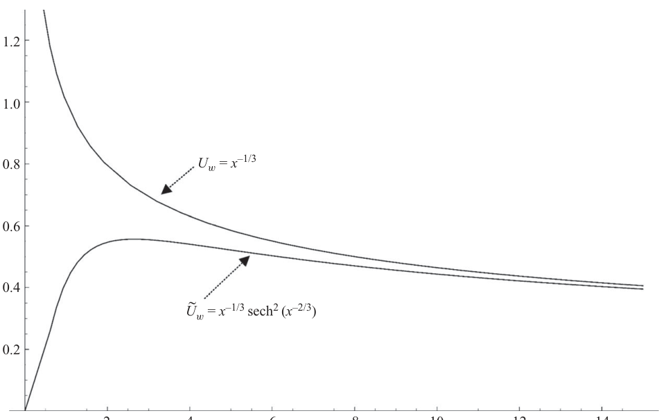

01中文摘要
重新审视连续运动表面诱导的定常平面边界层流动。指出控制方程与外缘条件在横向平移y→y+y₀(x)下不变，而壁面条件（拉伸速度Uw(x)与吹吸速度Vw(x)）显著改变。由此，从一个不可渗透表面的“基本解”出发，可生成无穷多个平移解，构成连续群。群元素描述变换壁面条件下可渗透表面的流动：Uw→Ũw(x)=u[x,y₀(x)]，Vw→Ṽw(x)=v[x,y₀(x)]−y₀′(x)u[x,y₀(x)]。只要反函数y₀=u⁻¹(x,Ũw)存在，就能由已知解构造任意期望拉伸速度对应的新解；若干已发表精确解其实是旧基本解的平移。
02阅读说明
类型：理论分析（精确解、对称性与群论），J. Fluid Mech. 655 (2010) 327–343，共17页。材料为带页码全文和1幅抓取图件；正文与参考文献完整，但PDF文本层的分式、根号、多行公式大量错位，已回读PDF第4、5、10–13页核对式(3.5)(3.7)(5.2)–(5.6)(7.1)–(7.14)。全文只有Figure 1（p.339）一幅图，图件清单亦仅此一项，故figures仅1条。信息完整度：假设、方程、三个算例完整；无实验/数值数据，无传热与可压缩效应。页码用期刊印刷页，figures.page为bundle图件清单页码（PDF页）。 文章类型：期刊
03一句话核心与三句话摘要
拉伸面边界层方程对 y→y+y0(x) 平移不变，已知精确解由此构成连续群并可生成新解。
- 连续运动表面诱导的边界层精确解数量庞大，且不可渗透与可渗透表面两条研究线彼此独立、缺乏统一的生成机制。 AI概括
- 作者证明控制方程与远场条件对任意横向平移 y→y+y0(x) 不变，壁面条件按 Ũw=u[x,y0]、Ṽw=v[x,y0]−y0'Ũw 改变，平移解构成连续交换群，并以Crane、Bickley和后向通用解为例给出群元素。 原文明确
- 由此，许多已发表的“新”精确解只是既有primary solution的平移对应解；任意目标拉伸速度都可由u的反函数反解位移，并以相应的抽吸/吹除实现。 AI概括
04核心内容清单
| 要点 | 类型 | 重要性 | 原文依据 | 属性 |
|---|---|---|---|---|
| 控制方程(2.3)与远场条件u(x,∞)=0对任意非均匀平移 y→y+y0(x) 不变；壁面条件则实质改变。 | 理论结论 | A | p.329–330，§3，式(3.1)–(3.6) | 原文明确 |
| 变换后壁面速度满足Ũw=u[x,y0(x)]、Ṽw=v[x,y0(x)]−y0'Ũw，横向平移等价于附加抽吸/吹除。 | 理论结论 | A | p.330，式(3.5) | 原文明确 |
| 所有平移解构成连续群：合成律y03=y01+y02，满足结合律与交换律，恒元为零平移，逆元为−y0。 | 群论论证 | A | p.330，§4 | 原文明确 |
| 若u(x,y)对y可反解，则η0=f'^{-1}(Ũw/Uw)给出匹配任意目标拉伸速度分布的位移。 | 理论结论 | A | p.333，式(5.11) | 原文明确 |
| η0=常数保持自相似，只重标定尺度因子并使不可渗透primary解变为带质量传递的解；故fw≠0的解不是基本新解。 | 理论结论 | A | pp.333–334，式(5.13)–(5.19) | 原文明确 |
| Crane群：任意Ũw(x)配合Ṽw=−√(aυ)[1−(1/a)dŨw/dx]都给出同一e^{-η}速度剖面，自相似性完全保持。 | 精确解算例 | A | p.335，式(6.5)–(6.7) | 原文明确 |
| Bickley群由(7.2)–(7.6)给出；常位移y0时Ũw=ax^{-1/3}sech²(√(a/6υ)y0x^{-2/3})，近缝区明显低于Uw、远下游趋于Uw。 | 精确解算例 | A | pp.337–339，式(7.3)–(7.6)、式(7.14)、Fig.1 | 原文明确 |
| 后向通用解 f=−fw²/(η−fw)、fw=−√(3|m+1|) 本身需要抽吸(m>−1)或吹除(m<−1)，故不是primary solution，但经平移仍可生成任意Ũw的解。 | 精确解算例 | B | p.340，式(8.1)–(8.8) | 原文明确 |
| Gupta & Gupta(1977)、Magyari & Keller(2000)、Weidman & Magyari(2010)、Fang & Zhang(2010)等解可分别视为Crane或后向通用解的平移对应解，而非独立新解。 | 文献重分类 | A | pp.336、338、340；p.341 §9(d) | 原文明确 |
| 平移自由度被作者视为边界层控制手段，并推测可用于多孔材料制造；该工程外推属作者设想。 | 作者展望 | C | p.341，§9 | 原文明确 |
| 结果可直接推广到动量方程含F(u)的情形（如横向磁场下的Hartmann阻力项−u）。 | 作者展望 | B | p.341，§9 | 原文明确 |
| 全文无传热方程、无压力梯度、无稳定性分析，且排除m=−1；不能据此判断解的物理可实现性。 | 材料局限 | C | 全文；p.331 | AI概括 |
05引言：研究问题与领域缺口
Sakiadis型（连续运动表面诱导）定常平面边界层自1961年以来积累了大量精确解，但不可渗透表面与可渗透表面两条研究线看似独立，解空间高度多样、难以归类（pp.327–328）。作者提出：控制方程对横向坐标的任意平移 y→y+y0(x) 不变，故一个已知解可生成无穷多新解，并可把大量解约化为少数生成解（primary solutions）。目标是建立平移群框架并给出Crane、Bickley、后向通用解三个算例。适用边界：定常、二维、不可压缩、环境静止、无流向压力梯度的层流边界层（式2.1–2.2，p.328）。
06流动条件与几何构型
| 项目 | 数值/描述 | 依据 | 备注 |
|---|---|---|---|
| 流动类型 | 定常、二维平面、不可压缩层流边界层；环境流体静止，u(x,∞)=0 | p.328，§2，式(2.1)–(2.2) | |
| 压力梯度 | 无流向压力梯度：动量方程为u ux+v uy=υ uyy，未含−p_x/ρ项 | p.328，式(2.1) | 对应均匀静止环境 |
| 表面状态（primary） | 不可渗透连续运动表面，Vw(x)≡0；拉伸速度Uw(x)给定 | p.330，§3；p.328式(2.2) | |
| 表面状态（变换后） | 可渗透表面，壁面拉伸与抽吸/吹除分布同时改变为Ũw、Ṽw | p.330，式(3.5) | 平移一般使Vw≠0 |
| 拉伸速度分布 | 幂律Uw(x)=a x^m，a=Uw(1 m)为有量纲尺度因子；m可为±∞间任意值，但m≠−1 | p.331，式(5.1) | 逆线性拉伸Uw=a/x需特殊处理，本文不讨论 |
| 尺度因子符号 | a>0：表面由狭缝向+x运动（拉伸，前向边界层）；a<0：表面由+x向狭缝运动（收缩，后向边界层） | p.331，§5.1 | |
| 符号因子 | s=sgn(a)sgn(m+1) | p.331，式(5.5) | |
| Crane算例 | m=1，s=1，a>0，Uw=ax，f=1−e^{−η}，f∞=1，边界层厚度δ=√(υ/a)为常数 | pp.334–335，式(6.1) | 前向边界层 |
| Bickley算例 | m=−1/3，a>0，Uw=a x^{−1/3}，f=√2 tanh(η/√2)，f∞=√2 | p.336，式(7.1) | |
| 后向通用解算例 | a<0，Uw=ax^m，s=−sgn(m+1)，fw=−√(3|m+1|)<0（m≠−1） | p.340，式(8.1)–(8.3) | |
| 横向平移类型 | 任意y0(x)；特例η0=常数保持相似性（对应y0∝x^{−(m−1)/2}）；特例y0=常数在m≠1时破坏相似性（η0∝x^{(m−1)/2}） | pp.333–334，§5.2–5.3 | m=1时y0=√(υ/|a|)η0，两特例等价 |
| 坐标与几何 | x沿表面运动方向、由狭缝起算；y垂直表面；半无限域y≥0；忽略表面曲率项 | pp.328–329，§2–§3 | |
| 流体物性 | 常运动黏度υ；无能量方程，不涉及温度、热流或可压缩性 | p.328，式(2.1) | |
| 雷诺数/参考长度 | 文中未定义整体雷诺数；局部相似变量η含√(Uw/(υx))；Crane情形δ=√(υ/a) | p.331式(5.2)；p.335 | 无实验工况表 |
07核心现象与关键参数
| 参数 | 定义 | 数值 | 关系/说明 | 依据 |
|---|---|---|---|---|
| m | 幂律拉伸速度指数，Uw=ax^m | 任意实数（m≠−1）；算例取m=1（Crane）、m=−1/3（Bickley） | 决定相似解族与前/后向性质 | p.331，式(5.1) |
| a | 拉伸速度尺度因子，a=Uw(1 m) | 算例中Crane/Bickley取a>0，后向解取a<0 | Ũw变换后重标定为ã=af'(η0) | p.331，式(5.1)；p.333，式(5.14) |
| s | 相似解符号因子 | s=sgn(a)sgn(m+1) | 控制v分量与Vw的符号 | p.331，式(5.5) |
| fw | 壁面无量纲质量传递（抽吸/吹除）参数，f(0)=fw | primary解fw=0；Crane群f̃w=f̃∞−1/f̃∞；Bickley群f̃w=√2 sinh(η0/√2) | 与Vw通过式(5.6)联系 | p.331，式(5.4)、(5.6)；p.336式(6.8)；p.338式(7.7) |
| f∞ | 无量纲卷吸速度f(∞) | Crane f∞=1；Bickley f∞=√2；变换后f̃∞=f∞/√f'(η0) | V∞=−s√(υ|(m+1)Uw|/(2x))f∞ | p.331，式(5.6)；p.334式(5.17)；pp.336、338 |
| η | 相似自变量 | η=√(|(m+1)Uw(x)|/(2υx))·y | 变换后出现η+η0(x) | p.331，式(5.2) |
| η0(x) | 相似变量位移，η0=√(|(m+1)a|/(2υ))x^{(m−1)/2}y0(x) | 由目标Ũw反解：η0=f'^{-1}(Ũw/Uw) | η0=常数⇔相似性保持 | p.332式(5.8)；p.333式(5.11) |
| y0(x) | 横向坐标y的平移量 | 任意函数；常数y0对应η0∝x^{(m−1)/2} | 壁面条件按(3.5)变换 | p.329，式(3.1)；p.334，§5.3 |
| f'(η0) | 变换后与原始拉伸速度之比 | Ũw/Uw=f'(η0) | 决定新尺度因子与质量传递参数 | p.332，式(5.10) |
| f̃w（Crane） | Crane群变换后的质量传递参数 | f̃w=f̃∞−1/f̃∞；f̃∞=½(f̃w+√(f̃w²+4)) | 给定f̃w可唯一确定f̃∞ | p.336，式(6.8)、(6.10) |
| f̃∞（Bickley） | Bickley群变换后的无量纲卷吸速度 | f̃∞=√(f̃w²+2)；ã=2a/(2+f̃w²) | 式(7.9)、(7.10) | p.338，式(7.9)–(7.10) |
| δ（Crane） | 常厚度前向边界层厚度 | δ=√(υ/a) | 与x无关 | p.335，§6 |
| Vw/V∞ | 壁面法向（抽吸/吹除）速度与卷吸速度 | Vw(x)=−s√(υ|(m+1)Uw|/(2x))fw；V∞同式以f∞替代fw | 符号由s与fw/f∞组合决定 | p.331，式(5.6)；p.340 |
08方法与数据
纯理论工作。以(2.1)–(2.4)的边界层方程及流函数形式为起点，直接对ψ作变换 ψ̃(x,y)=ψ[x,y+y0(x)]，用链式法则证明方程与远场条件不变（3.1–3.6）；由壁面条件导出Ũw、Ṽw（3.5），并由u的反函数给出匹配任意目标Ũw的位移（3.7、5.11）；再逐条检验群公理（第4节）；随后把变换作用于幂律相似解（5.1–5.19），并逐例计算Crane（第6节）、Bickley（第7节）与通用后向解（第8节）。验证方式是与文献中已发表的精确解逐式对照（Gupta & Gupta 1977、Magyari & Keller 2000、Weidman & Magyari 2010、Fang & Zhang 2010），没有实验或数值验证。
| 项目 | 内容 | 依据 | 备注 |
|---|---|---|---|
| 研究类型 | 理论分析：边界层方程的对称性、连续群与精确解生成 | p.327，Abstract；pp.328–330 | |
| 控制方程 | 定常二维不可压缩边界层：u_x+v_y=0，u ux+v uy=υ uyy；无压力梯度项 | p.328，式(2.1) | |
| 流函数表述 | u=ψ_y，v=−ψ_x；ψ_yψ_xy−ψ_xψ_yy=υψ_yyy | p.329，式(2.3)–(2.4) | |
| 变换方法 | y→y+y0(x)，ψ̃(x,y)=ψ[x,y+y0(x)]；链式法则证明方程不变，交叉项±y0'ψ_yψ_yy相消 | p.329，式(3.1)–(3.3) | |
| 群论检验 | 验证封闭性（位移相加）、结合律、交换律、恒元（零平移）与逆元（−y0） | p.330，§4 | |
| 相似解框架 | 幂律Uw=ax^m；引入f(η)得s f'''+f f''−(2m/(m+1))f'^2=0，f(0)=fw，f'(0)=1，f'(∞)=0 | p.331，式(5.1)–(5.4) | |
| 反解构造 | 由Ũw=Uw f'(η0)反解η0=f'^{-1}(Ũw/Uw)，再代回(5.9)得目标流场；(3.7)给出对应Ṽw | pp.332–333，式(5.9)–(5.11) | |
| 算例1：Crane | f=1−e^{−η}，Uw=ax；导出广义Crane解(6.5)–(6.6)及常η0的Gupta–Gupta解(6.11) | pp.334–336，§6 | |
| 算例2：Bickley | f=√2 tanh(η/√2)，Uw=ax^{−1/3}；导出(7.2)–(7.6)、(7.11)–(7.12)及常y0的(7.13)–(7.14) | pp.336–339，§7 | |
| 算例3：后向通用解 | f=−fw²/(η−fw)，fw=−√(3|m+1|)；给出平移后的(8.6)–(8.8) | p.340，§8 | 式(8.6)–(8.8)在文本层根号错位，精确形式未逐字核对 |
| 验证方式 | 与已发表精确解逐式对照：Gupta & Gupta(1977)、Magyari & Keller(2000)、Weidman & Magyari(2010)、Fang & Zhang(2010) | pp.336、338、340 | 无实验或数值验证 |
| 数值/实验 | 文中未涉及 | 全文 | |
| 不确定度 | 理论工作，无测量不确定度；未讨论截断误差或数值误差 | 全文 |
09核心推导与公式
从定常二维边界层方程出发，利用方程不显含y、且忽略曲率项的事实，把横向坐标的任意平移y→y+y0(x)作为对称变换；证明方程与远场条件不变而壁面条件改变，从而由任一已知解生成新解，并用壁面条件中u的反函数把变换反解为对目标拉伸速度的构造。随后把变换施加于幂律相似解，区分η0=常数（保持相似）与y0=常数（破坏相似）两种特例。
关键假设
- 定常、二维平面、不可压缩层流边界层，常运动黏度υ
- 环境静止且压力均匀，动量方程不含−p_x/ρ项，u(x,∞)=0
- Prandtl边界层假设成立，表面曲率项已忽略，故允许非均匀平移y0(x)
- 表面为连续运动/拉伸表面，壁面速度Uw(x)与法向速度Vw(x)给定
- 幂律拉伸Uw=ax^m，m≠−1；逆线性情形m=−1被排除
- 构造目标Ũw时要求u(x,y)对y单调可反解，即f'可逆
推导过程
定常二维不可压缩边界层，环境静止，动量方程无压力梯度项；以u=ψ_y、v=−ψ_x引入流函数后化为三阶方程，壁面与远场条件如(2.4)。
把横向坐标平移任意函数y0(x)，并对流函数作复合：新流函数在原坐标y+y0(x)处取值。
y方向导数形式不变；x方向导数除ψ_x外多出y0'ψ_y。代入(2.3)后，左端产生的±y0'ψ_yψ_yy两项相消，方程形式不变，右端仍为υψ̃_yyy。
对ψ̃求导得速度变换；在y=0处取值即得新的拉伸速度与抽吸速度分布。远场条件u(x,∞)=0保持不变，但壁面条件因y0'Ũw项而实质改变。
若已知u(x,y)且其对y可反解，则由Ũw=u[x,y0(x)]解出y0=u^{-1}(x,Ũw)，代回得对应的Ṽw；在相似解框架下等价于η0=f'^{-1}(Ũw/Uw)。
两次相继平移等价于位移相加；该合成律满足结合律与交换律，零平移为恒元，相反位移为逆元，故平移解集构成连续交换群（平移群）。
取Uw=ax^m，引入相似变量η与无量纲流函数f，得相似ODE与壁面/远场条件；速度分量由(5.2)给出，符号因子s=sgn(a)sgn(m+1)。
把η替换为η+η0(x)，其中η0由y0按(5.8)换算；由此得到变换后的速度场、拉伸速度与抽吸速度。
当η0为常数时，变换后的拉伸速度仍为幂律且仅改变幅值；引入ã、f̃、η̃后新解与primary解同形式，但带有非零质量传递参数，故可视为同一相似族的平移元素。
Crane解f=1−e^{−η}经变换后仍给出同一e^{−η}剖面，任意Ũw只需补偿抽吸Ṽw；Bickley解f=√2tanh(η/√2)的群元素由(7.2)–(7.3)给出，反解位移为(7.4)，常y0时相似性破坏。
对a<0取s=−sgn(m+1)，相似ODE有代数衰减的通用解f=−fw²/(η−fw)，其中fw=−√(3|m+1|)；该解要求壁面抽吸/吹除，故非primary，但同样可经平移生成任意目标Ũw的解。
适用边界：推导依赖定常、二维、不可压缩、常黏度、无压力梯度与环境静止；允许非均匀平移的前提是忽略曲率项；m=−1被排除；(3.7)/(5.11)要求u对y单调可反解；未讨论稳定性、物理可实现性与传热。后向通用解的式(8.6)–(8.8)在PDF文本层根号与分式错位，本记录不引用其精确形式（受限于材料，无法确认）。
10结果：主要发现与关键证据
核心结果：(i) 方程与u(x,∞)=0对任意y→y+y0(x)不变，壁面条件变为Ũw=u[x,y0(x)]、Ṽw=v[x,y0(x)]−y0'Ũw（p.330）；(ii) 平移解构成连续交换群（p.330）；(iii) 当f'可反解时 η0=f'^{-1}(Ũw/Uw)，可对任意目标拉伸速度构造解（p.333）；(iv) η0=常数保持相似性，只把a重标定为ã=af'(η0)并产生非零质量传递参数f̃w=f(η0)/√f'(η0)（pp.333–334）；(v) y0=常数一般破坏相似性，Bickley例中Ũw=ax^{-1/3}sech²(√(a/6υ)y0x^{-2/3})，小x处显著偏离Uw、远下游趋近之（式7.14、Fig.1、p.339）；(vi) Crane群给出同一e^{-η}剖面及补偿抽吸/吹除（6.5–6.7，p.335）；(vii) 后向通用解在m>-1需抽吸、m<-1需吹除，故非primary，但仍可平移（p.340）。
| 发现 | 证据 | 证据类型 | 强度 | 位置 | 属性 |
|---|---|---|---|---|---|
| 控制方程与远场条件对任意非均匀横向平移y→y+y0(x)严格不变。 | 式(3.3)与(3.6)的逐步推导，交叉项相消 | 理论证明 | 强 | pp.329–330，§3 | 原文明确 |
| 平移不改变方程但改变壁面条件，新抽吸速度含−y0'Ũw项；因此平移一般生成可渗透表面上的新流动。 | 式(3.5)；式(3.7)的反解形式 | 理论结论 | 强 | p.330，式(3.5)–(3.7) | 原文明确 |
| 由给定解生成的平移解构成连续交换群（加法合成、零恒元、相反位移为逆元）。 | 第4节群公理逐条检验 | 群论论证 | 强 | p.330，§4 | 原文明确 |
| 只要速度剖面可反解，任意目标拉伸速度分布都可由一个已知解经单一平移构造出来。 | η0=f'^{-1}(Ũw/Uw)；Crane、Bickley、后向解三例的具体反解式 | 理论构造 | 强 | p.333，式(5.11)；pp.335–340 | 原文明确 |
| 非零质量传递参数fw的相似解不是基本新解，而是fw=0的primary解在η0=常数下的平移。 | 式(5.14)–(5.19)与(5.2)同形式；f̃w=f(η0)/√f'(η0) | 理论结论 | 强 | pp.333–334，§5.2 | 原文明确 |
| Crane解的平移群表明：任意Ũw(x)配合式(6.6)的抽吸/吹除，都给出同一条e^{−η}速度剖面。 | 式(6.5)–(6.7)；e^{−η}=u/Uw=ũ/Ũw | 精确解 | 强 | p.335，§6.1 | 原文明确 |
| Bickley解在常数y0平移下相似性破坏；Ũw在近缝区可远低于Uw，但远下游两者趋于一致。 | 式(7.14)与Fig.1的Uw、Ũw曲线 | 精确解+图示 | 强 | p.339，式(7.14)、Fig.1 | 原文明确 |
| 若干已发表精确解（Gupta–Gupta、Magyari–Keller、Weidman–Magyari、Fang–Zhang）可归并为既有primary解的平移对应解。 | 逐例与(6.11)、(7.9)–(7.12)、(8.2)对照 | 文献重分类 | 中 | pp.336、338、340；p.341 §9(d) | 原文明确 |
| 后向通用解本身需要壁面抽吸(m>−1)或吹除(m<−1)，不满足primary定义，但仍可作为平移群的生成元。 | 式(8.5)第二式及随后的讨论 | 理论结论 | 中 | p.340，§8 | 原文明确 |
11机制解释与论证链
作者论证的链条为：边界层方程(2.3)不显含y → 均匀平移不变；又因Prandtl理论忽略曲率项，x动量方程对非均匀平移y→y+y0(x)也不变 → 远场条件u(x,∞)=0不变；但壁面位于y=0，平移后壁面处的速度为原流场在y=y0(x)处的值，且x方向导数产生−y0'u项 → 新的Ũw、Ṽw同时由原流场的u、v决定。物理上，这相当于把原流场的某条流线当作新的壁面：若要保持同样的速度剖面，就必须以抽吸/吹除补偿壁面法向速度。对相似解，常数η0位移只改变拉伸幅值与质量传递参数，故不产生新的相似族；常数y0位移则使η0随x变化，破坏自相似。上述为原文证明与AI概括的结合；文中未讨论该对称性在真实黏性流中的稳定性或可实现性误差。
12讨论：结论、贡献与局限
机制上，边界层方程不显含y，且Prandtl理论忽略曲率项，使非均匀平移也成为对称性；平移把壁面移到原流场内部，原流场的u、v在y=y0处共同决定新的Ũw、Ṽw，等价于用抽吸/吹除补偿拉伸速度分布的改变（pp.329–330）。作者据此主张许多“新”精确解只是平移对应解（pp.336、338、340–341），并把平移自由度视为边界层控制与多孔材料制造的可能工具，还指出结果可推广到含F(u)项的动量方程（如MHD Hartmann阻力，p.341）。局限：仅定常二维不可压缩、无压力梯度与传热；m=−1被排除；要求u对y可反解；对y0=常数破坏相似性的情形只给形式解，未讨论稳定性与工程可实现性。
作者结论
作者结论（p.341，§9）：(a) 边界层方程与u(x,∞)=0对任意y→y+y0(x)不变，而Ũw=u[x,y0]、Ṽw=v[x,y0]−y0'u[x,y0]发生实质改变；(b) 由此可从任一已知解生成无穷多新解，构成连续平移群；(c) 当Ũw的定义式可反解时，可由目标Ũw反求y0(x)，从而按需构造解；(d) 过去发现的若干精确解并非基本新解，而是既有解的平移对应解。作者据此强调抽吸/吹除速度分布在边界层控制中的重要性，并指出结果可推广到含F(u)项的动量方程。
主要贡献
- 证明定常平面拉伸面边界层方程对任意非均匀横向平移y→y+y0(x)不变，并给出壁面条件的变换规则。
- 建立平移群框架，把大量精确解约化为少数primary solutions的群元素。
- 给出Crane、Bickley、后向通用解三个完整算例及反解构造公式。
- 识别Gupta–Gupta、Magyari–Keller、Weidman–Magyari、Fang–Zhang等解为平移对应解。
- 指出该对称性可推广到含F(u)的动量方程（如MHD流动）。
局限与未解决问题
作者承认的局限较少，主要在§5.1排除m=−1的逆线性拉伸，并说明只讨论幂律相似（p.331）。AI识别的局限：全文为定常二维不可压缩、无压力梯度、无能量方程的理想化模型，不能直接给出高速可压缩SBLI的结论；未讨论平移解在真实流动中的稳定性、可实现性及抽吸/吹除的能量代价；反解要求u对y单调，强抽吸/吹除或分离时可能失效；后向通用解的(8.6)–(8.8)排版不清，未能逐字核对；仅一幅图，且无任何定量误差或与实验的对比。
13对高速流动与工程的意义
对边界层理论与工程的意义：提供了一种“生成解”的方法，可把已知相似解扩展到任意拉伸速度分布与任意抽吸/吹除分布，减少重复求解；把表面质量传递识别为拉伸速度改变的对偶机制，对聚合物/玻璃纤维/金属板材连续成型中的冷却与膜厚控制有潜在价值（作者设想，p.341）。方法层面，群不变性思路可推广到含体积力F(u)的边界层方程。需要强调：本文不涉及可压缩、高速、激波/边界层干扰或热流，不能直接外推到高超声速SBLI；其对“新解”的重新分类只在该理想化模型内成立。上述工程外推属AI推断。
14核心图件

15可引用原文素材
| 原文短句 | 可支持的观点 | 位置 | 使用建议 |
|---|---|---|---|
| “invariant under arbitrary translations y → y + y0(x) of the transverse coordinate y” | 任意非均匀平移不变性 | p.327，Abstract | 作为核心symmetry结论的直接引文 |
| “The wall conditions ... however, undergo in general substantial changes” | 壁面条件实质改变 | p.327，Abstract | 强调方程不变而边界条件变 |
| “infinitely many translated solutions can be generated which form a continuous group” | 无穷多解构成连续群 | p.327，Abstract | 概括群结构 |
| “the set of solutions ... forms a continuous group” | 平移群的封闭性 | p.330，§4 | 群公理讨论处引用 |
| “do not represent basically new solutions of the boundary value problem” | fw≠0解非基本新解 | p.334，§5.2 | 文献重分类的关键句 |
| “the similar velocity field e−η is the same for the whole translation group” | Crane群保持同一剖面 | p.335，§6.1 | 说明抽吸/吹除的补偿作用 |
| “several exact solutions discovered in the past are not basically new solutions” | 历史解重分类 | p.341，§9(d) | 结论部分引用 |
| “the paramount importqance of the transpiration velocity distribution in the boundary-layer control” | 抽吸/吹除的工程意义 | p.341，§9 | 引用时注明原文拼写如此 |
16最终核验
| 核验项 | 结论 |
|---|---|
| 仅基于全文 | 是：仅使用bundle全文、图注与图件清单，并回读原PDF第4、5、10–13页核对公式；未引入外部知识。 |
| A 级要点有依据 | 是：A级条目均给出印刷页码、节号与式号/图号；平移不变性、壁面条件、群结构、反解式及两个算例均可在pp.329–339逐式对应。 |
| 属性标注 | 是：three_sentence、core_points、findings均标注原文明确/AI概括/AI推断；作者展望与AI推断分开。 |
| 覆盖范围 | 覆盖Introduction、Basic equations、Translation invariance、Translation group、Translations of self-similar solutions、Crane/Bickley/backward三算例与Summary；IMRaD四节均实质填写。 |
| 无编造 | 是：未编造页码、图号、公式或数据；全文仅1幅图，figures如实只列1条；式(8.6)–(8.8)文本层不清处已注明“受限于材料，无法确认”。 |
需回原文确认
- 常数η0平移保持相似，但它对应的y0(x)∝x^{−(m−1)/2}在x→0或x→∞时是否有物理意义？
- 非均匀平移解在真实黏性流中是否稳定、能否用有限长度的抽吸/吹除段实现？
- 作者排除m=−1，逆线性拉伸Uw=a/x是否也存在相应的平移群？
- 当u(x,y)对y不单调（如存在局部速度极大）时，反解(3.7)/(5.11)如何处理多值？
- 该对称性是否适用于含压力梯度的Falkner–Skan类流动，还是仅限零压力梯度？
- 后向通用解(8.6)–(8.8)的根号与分式确切形式为何？文本层无法确认。
- 抽吸/吹除的能量代价与实际可实现速度范围文中未讨论，工程可用性如何？
17关联文献
依据标签、板块、构型与作者脉络自动关联，可据此追踪同一问题的前序与后续工作。
18引用格式
选择期刊风格后复制；出处保留原刊名。BibTeX 可直接用于 LaTeX。
引用格式
Magyari, E. 2010 Translation groups of the boundary-layer flows induced by continuous moving surfaces. Journal of Fluid Mechanics. https://doi.org/10.1017/s0022112010000911
PDF上传 PDF 并更新本页
本页缺少全文、摘要或图件时，可在浏览器本地补入 PDF。解析完全在本机完成，不上传网络；完成后会更新本页的 PDF 打开链接、原摘要、IMRaD 机器抽取、关键句与含图页面。复杂的公式语义与中文深度解读仍以原文和既有精读记录为准。
Zotero 笔记摘录
（暂时用不到）稳态不可压缩流体中连续运动平板诱导的层流边界层流动，给定一个基本解可以获得无数个新解，称为平移解，本文给了三个解析解的平移群，其中包括Crane解、Bickley解、通用后向边界层解（要求壁面吹吸）